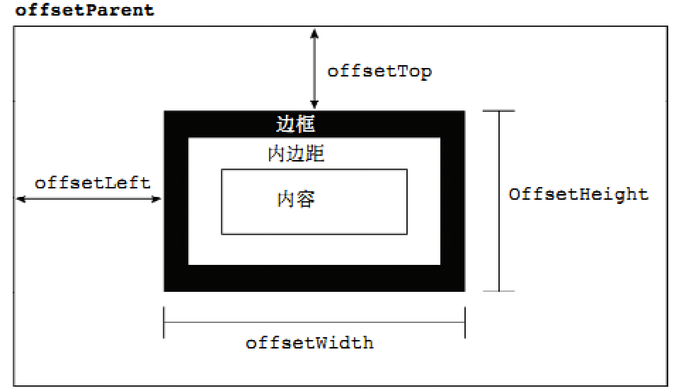
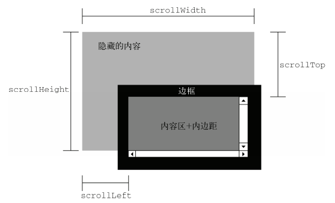
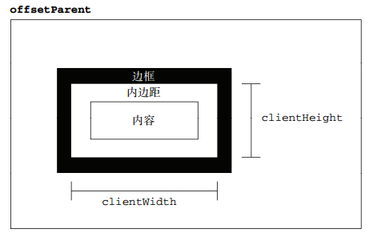
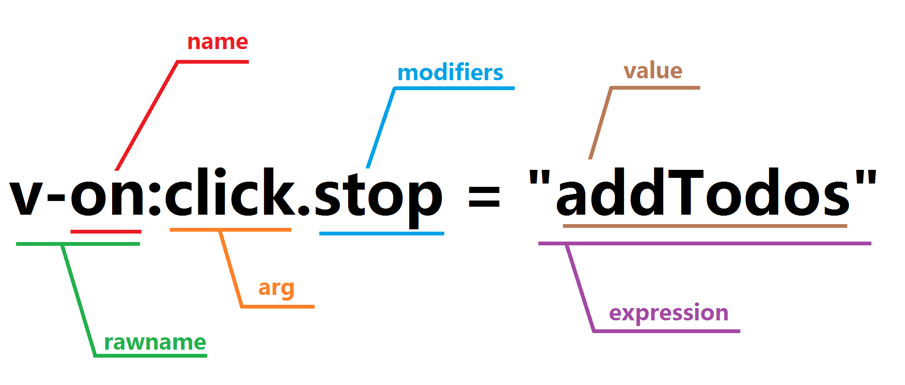

行内样式:<table border="1" cellspacing="0" cellpadding="0" width="200" height="300"> </table>
cellspacing:设置单元格与单元格边框之间的空白间隙
cellpadding:设置单元格内容与边框之间的空白间隙
CSS样式表:
table {
width: 200px;
height: 300px;
border: 1px solid #000;
border-collapse:collapse;
border-spacing:0;
}
th,td {
border: 1px solid #000;
padding:0;
}
border-collapse:collapse;将边框合并成单一的边框，效果等于与cellspacing
border-spacing 可以修改单元格与单元格边框之间的空白间隙，但是如果border-collapse设置成collapse是没有效果的
th,td{padding:0}就是将cellpadding去掉
合并单元格遵循一个顺序规定：从上至下，从左至右
rowspan跨行合并 colspan跨列合并，他们都是行内样式，参数为合并单元格的数量
:link{ } 未访问的链接；:visited{ } 已访问过的链接；:hover{ } 鼠标经过链接；:active{ }鼠标按下链接中
以上样式的顺序固定
.clearfix::before,
.clearfix::after {
content: "";
display: table;
}
.clearfix::after {
clear: both;
}
/* 兼容 IE 67 */
.clearfix {
*zoom: 1;
}
①盒子需要overflow:hidden 隐藏超出部分
②white-space:一般文字一行显示不下的时候会自动换行 参数:normal默认 nowrap 强制一行显示
text-overflow:文字溢出 参数:clip:不显示省略号 ellipsis:显示省略号
/*单行溢出*/
.one-txt-cut {
overflow: hidden;
white-space: nowrap;
text-overflow: ellipsis;
}
/*多行溢出*/
.txt-cut {
overflow: hidden;
text-overflow: ellipsis;
display: -webkit-box;
-webkit-line-clamp: 2;
-webkit-box-orient: vertical;
}
设置一个盒子，宽高为0，某个边框设置样式，三角形的高即为border的宽度（border-width），其他三条边框，设置成透明色（transparent）
text-shadow:水平偏移 垂直偏移 模糊度 阴影颜色;
可以给一个文字设置多个阴影效果，中间使用逗号 "," 进行连接。
box-shadow:水平阴影 垂直阴影 模糊距离 （阴影尺寸） 阴影颜色 （内/外阴影）；
前两个属性是必须写的。其余的可以省略。 默认阴影是外部阴影，但是不能设置outset这个属性值。如果想要内部阴影，请设置inset
参数可以是百分比，数值（+px），还有几个关键词
关键词
contain(包含)，图片的宽高有一个铺满了盒子，就不再扩大，盒子会留空。cover(覆盖)图片等比例缩放，直到盒子全部被占满，图片会展示不全
background连写：background：color image repeat attachment position / size
display:flex
一个盒子设置了display：flex之后，这个盒子就有了主轴 和侧轴 的概念,子元素默认在主轴开始的位置排列
flex-direction:修改主轴的方向
参数：row：默认值，水平向右；row-reverse：水平向左；column：垂直向下；column-reverse：垂直向上
justify-content:设置子元素在主轴上的排列方式
参数：flex-start：默认，在主轴开始的位置排列；flex-end：在主轴结尾的位置排列；center：在中间排列；space-around：盒子均分排布，带左右空隙；space-between：盒子均分排布，左右贴边
align-items：设置侧轴的排列方式（单排）（查文档）
参数：flex-start：在侧轴顶部的位置排列（贴着顶部）； flex-end：在侧轴底部的位置排列（贴着底部）； center：中间；stretch：子盒子没有高度时默认拉伸（上下）
flex-wrap：设置子元素是否换行（查文档）
参数：nowrap不换行 wrap换行
align-content：设置侧轴的排列方式（多行）（查文档）
参数：flex-start：默认，在侧轴开始的位置排列；flex-end：在侧轴结尾的位置排列；center：在中间排列；space-around：盒子均分排布，带上下空隙；space-between：盒子均分排布，上下贴边；stretch：拉伸，不设置高度的情况下
-------------------↑以上属性给父盒子添加，以下属性给子盒子添加↓-------------------
flex：分配主轴的空间 参数为数字
order：设置子元素排序，默认0，数值越小，顺序越靠前
align-self：设置单个子元素在侧轴的排列方式（查文档）
参数：参数：flex-start：在侧轴顶部的位置排列（贴着顶部）； flex-end：在侧轴底部的位置排列（贴着底部）； center：中间；stretch：子盒子没有高度时默认拉伸（上下）
根据媒体查询来适配各种屏幕的设备@media(条件) and (条件) ……{ }
//定义less函数
.adapter(@minWidth) {
@media (min-width:@minWidth) {
html {
//round四舍五入，2是小数点后两位
font-size: round(@minWidth/15,2)
}
}
}
.adapter(320px);
.adapter(360px);
.adapter(375px);
.adapter(384px);
.adapter(400px);
.adapter(414px);
.adapter(424px);
.adapter(480px);
.adapter(540px);
.adapter(720px);
.adapter(750px);
//调用函数后的css文件中的样式
@media (min-width:750px) {
html {
font-size: 750/50px;
}
}
rem布局是将我们常用的px像素装换成rem单位，由html的font-size去改变rem的大小，px = font-size * rem
js写rem响应式布局
$(function (){
$(window).resize(function () {
let width = $(window).width()
width = Math.max(width, 320) //最小宽度
width = Math.min(width, 750) //最大宽度
let fontSize = width / 15
$('html').css('fontSize', fontSize.toFixed(2) + 'px')
}).resize()
})
①左右分栏区域滚动
容器：position:absolute 不给高度但利用top与bottom实现高度，使用display:flex布局
内容：一侧给死宽度，另一侧flex:1,都给overflow-y:scroll
②横向的区域滚动
容器：overflow:auto;overflow-x:auto!important;overflow-y:hidden;white-space:nowrap(内容不换行)
内容：display：inline-block;千万不要用浮动
如果以上方法不想使用，就动态渲染容器的宽度吧
Auto Rename Tag：修改标签，自动匹配另一个标签
Bracket Pair Colorizer：给括号颜色，方便区分对应括号
Chinese(Simplified)Language：中文汉化
Easy Less：less功能
需要配置：设置--{}，在里面添加
"less.compile": {
"out": "../css/" /*less转化成css文件的存放位置*/
},
Material Icon Theme：左侧文件图标美化
Open in Browser：设置默认打开文件的浏览器
px2rem：设置px转成rem
需要配置：设置中搜索rem，修改font-size
react中jsx标签用tab自动生成
需要配置：设置--{}，在里面添加
//jsx标签tab
"emmet.includeLanguages": {
"vue-html": "html",
"javascript": "javascriptreact",
"postcss": "css"
},
"emmet.triggerExpansionOnTab": true,
"emmet.showSuggestionsAsSnippets": true
--------------------------华丽的分割线--------------------------
Math方法
Math.abs()：绝对值，Math.pow(x,n)：x的n次方，Math.sqrt()：开平方
Array方法
arr.join()：用括号内的字符将数组拼接成字符串，返回值为字符串 arr.reverse()：翻转数组,原数组会改变，返回值是该数组
arr.push()：在数组最后添加若干个元素，arr.unshift()：在数组前面添加若干个元素，添加的返回值是新数组的长度，原数组改变
arr.pop()：删除数组最后一个元素，arr.shift()：删除数组第一个元素，返回值是删除的元素，原数组改变
arr.sort(a-b)：数组从小到大排序(b-a)数组从大到小，返回值为排序后的数组，括号内参数可以是一个函数方法，排序的规则
arr.concat(arr1)：合并两个数组，返回值为新数组
arr.slice(begin,end)：从begin的位置开始截取数组，直到end(自己判断截不截取end的位置)，如果end不传，截取到最后，返回值为截取的部分，原数组不改变
arr.splice(begin,deletcount,element....)：在数组任意位置删除/添加/插入若干元素，begin：开始位置，deletcount：删除个数，这个参数有点意思，不传的时候，会删除开始位置之后所有的元素，传0的时候，并不会删除元素，而会添加element。当删除了元素时，返回值是被删除元素组成的新数组。如果没有删除元素，返回值为一个空数组。原数组会改变
arr.indexOf()：查找某个元素在数组中第一次出现的位置，返回值为第一次出现的下标，如果为-1，说明不存在
arr.lastIndexOf()：查找某个元素在数组最后一次出现的位置，返回值为下标，如果为-1，说明不存在
String方法
string.indexOf()：查找某个元素在字符串中第一次出现的位置，返回值为第一次出现的下标，如果为-1，说明不存在
string.lastIndexOf()：查找某个元素在字符串最后一次出现的位置，返回值为下标，如果为-1，说明不存在
string.trim()：删除字符串两边的空格，并不会删除中间的空格
string.toUpperCase：转大写，string.toLowerCase：转小写
string.concat(string1)：合并两个字符串，返回值为新的字符串。实际开发时用+将两个字符串拼接即可
string.slice(begin,end)：截取字符串的一部分，包含begin，不包含end
string.substring(begin,end)：同上，不同的是此方法end不能为负
string.substr(begin,length)：截取字符串的一部分，从begin开始截取length个
string.split(分隔符)：根据分隔符在字符串中的位置，将字符串切割成数组，可以使用[index]下标来获取某一部分的字符串
string.replace('a','b')：将字符串中的a用b代替
①className：仅仅只是获取与修改类名
②classList，可以对类名进行操作推荐使用
classList.add()添加类名，不会覆盖原有的类名；classList.remove()移除类名，只会移除参数内的类名；classList.contains()判断是否包含类名；classList.toggle()切换类名
子节点 childNodes：获取所有的孩子节点（包括了元素节点和其他很多类型的节点，基本不常用）
children：获取所有的子元素（用途很广泛），兼容性：IE678会把注释节点算上。
firstChild：第一个子节点
firstElementChild：第一个子元素 有兼容性问题（IE678）
lastChild：最后一个节点
lastElementChild：最后一个子元素 有兼容性问题（IE678）
兄弟节点nextSibling：下一个兄弟节点
nextElementSibling：下一个兄弟元素（IE678不兼容）
previousSibling：上一个兄弟节点
previousElementSibling：上一个兄弟元素 有兼容性问题 可以封装一个兼容性方法
父节点parentNode：父节点 没有兼容性问题
添加节点①parent.appendChild(child)：在父节点后面添加child
②parent.insertBefore(newChild,refChild)：通过父元素在refChild前面添加newChild，如果refChild为null，则在最后面添加；如果refChild为parent.firstElementChild，则在最前面添加
创建节点①document.write()：基本不使用，会覆盖原有的页面
②innerHTML：会覆盖原有的页面
③document.createElement(标签名)：在内存中创建需要的标签，然后再往标签内添加内容，再使用添加节点的方法，把创建的标签添加到父元素中
删除节点parent.removeChild(child)：从父元素中删除child
替换节点parent.replaceChild(newchild,oldchild)：用newchild替换oldchild
克隆节点node.cloneNode()：在内存中克隆一个节点。参数为布尔类型，true：深克隆，会把标签包括其内容原样的克隆一份；false：浅克隆，只是克隆一个标签
参数有三个，参数1：事件类型；参数2：事件处理程序；参数3：指定事件是否在捕获阶段执行，默认false表示冒泡，true为捕获，优点是可以注册多个事件，不会覆盖
移除绑定事件，removeEventListener(事件类型，注册事件的函数名)，移除事件时，需要事件的函数名，所以注册的时候需要命名函数
e.screenX,e.screenY：相对于屏幕左上角
e.clientX,e.clientY：相对于可视区
e.pageX,e.pageY：相对于document页面的左上角（推荐使用）

offsetHeight和offsetWidth：获取元素真实的宽高，只读属性，width+padding+border
offsetLeft和offsetTop：获取盒子距离最近有定位的父元素的真实距离，有margin值，只读属性
offsetParent：找到离盒子最近的有定位的父元素

scrollWidth和scrollHeight：盒子内容的真实的宽度和高度。与和盒子大小无关，仅仅与盒子的内容有关系
scrollLeft和scrollTop,获取滚动条的距离
onscroll事件，滚动事件，可以通过注册该事件，用window.pageYOffset,来获取垂直滚动条滚动距离

clietnWidth: 获取内容和padding的大小（不包括边框） clientHeight:获取内容与padding的大小（不包括边框）
clientLeft和clientTop：完全没用
window.onload = function(){
//里面的代码会在窗体加载完成后执行。
//窗体加载完成包括文档树的加载、还有图片、文件的加载完成。
}
作用：等待页面加载完成，还会等待图片也加载完成。
1、如果想要在结构前面获取DOM元素；2、如果想要获取图片的宽高
一个页面能不能写两个window.onload?答案是后面window.onload的会覆盖前面的
location.href：页面跳转
location.reload()：页面刷新
location.search：获取地址栏里链接？之后的内容
location.hash：获取地址栏里链接的锚点，#之后的内容
history.go()：参数为1：下一页；参数为0：当前页；参数为-1：上一页
history.forward()：前进
history.back()：后退
1.混入式继承：给对象上添加一个方法extend,可以遍历其他对象自身的方法，拷贝到自己身上
extend:function(obj){
for(let k in obj){
if(obj.hasOwnProperty(k)){ //判断是不是obj自身的方法
this[k] = obj[k]
}
}
}
2.原型式继承①直接给原型上加属性，这样实例就会继承：Person.prototype=
②原型替换：把构造函数的原型替换成了一个新的对象，此方法新对象里需有constructor属性Person.prototype={constructor:Person}
③混入式继承+原型式继承：将混入式的extend方法放到原型上，这样可以继承多个对象
Person.prototype.extend = function(obj) {
for (var k in obj) {
if (obj.hasOwnProperty(k)) {
this[k] = obj[k]
}
}
}
3.经典继承：var obj = Object.create(proto)：快速让一个对象继承另一个对象，返回值：obj 新对象，新对象的原型就是proto
call调用一个函数，并可以改变这个函数的this指向，语法：fn.call(this,参数1,参数2)。参数为这个函数需要的参数
apply调用一个函数，并可以改变这个函数的this指向，语法：fn.call(this,[参数1,参数2])。参数为这个函数需要的参数,但它是一个数组
bind根据一个函数返回一个新的函数，并且新函数函数的this永远指向bind的第一个参数，语法：var newFn = fn.bind(window)
与call和apply不同，call，apply是借用方法，立马执行。bind是绑定方法，不会执行
$('a').children('b')：找到a元素里所有子元素中的b元素
$('a').find('b')：找到a元素所有后代元素中的b元素
siblings()：所有兄弟元素；next()：下一个兄弟；prev()：上一个兄弟；parent()：父亲；eq(index)：找下标的元素
prop()：checked、selected、disabled这类boolean类型的属性来说，不能用attr方法，只能用prop方法
$(selector).animate({params},[speed],[easing],[callback]);
params：是一个对象，包含需要动画的css属性与属性值（必写）；speed：动画时长（可写）；easing：动画运动曲线（可写），默认：swing（缓动），linear（匀速）；callback：回调函数，动画执行完后执行（可写）
创造节点$("<div>这是一个div</div>")
添加节点parent.append(child)/child.appendTo(parent)：把child添加到parent的子元素最后
parent.prepend(child)/child.prependTo(parent)：把child添加到parent的子元素最前
node.before(node1)：把node1添加到node前面
node.after(node1)：把node1添加到node后面
删除节点node.remove()：删除自己
node.empty()：清空节点，把node的所有子元素全部清除
克隆节点$(selector).clone()：克隆，返回值为新的元素。有一个参数，参数为true，深克隆，会克隆事件，参数为false，深克隆，但不会克隆事件
$(window).scrollTop()获取滚动条的位置；$('html').animate({scrollTop:0},2000)：回顶部
$(selector).offset()：获取元素距离document的位置,返回值为对象：{left:100, top:100}
$(selector).position():获取相对于其最近的有定位的父元素的位置
$(selector).each(function(index,element){$(this)})：$(this)为遍历的每一个元素
当jquery的$被其他文件占用，此时我们不得释放$的控制权，var $$ = $.noConflict();//释放$的控制权,并且把$的能力给了$$
Lazy Load 是一个用 JavaScript 编写的 jQuery 插件. 它可以延迟加载长页面中的图片. 在浏览器可视区域外的图片不会被载入, 直到用户将页面滚动到它们所在的位置.在包含很多大图片长页面中延迟加载图片可以加快页面加载速度. 浏览器将会在加载可见图片之后即进入就绪状态. 在某些情况下还可以帮助降低服务器负担.
使用方法引入jQuery.js与jquery.lazyload.js
你必须改变图片的标签。图像的地址必须放在data-original属性上。给懒加载图像一个特定的class（例如:lazy）。这样你可以很容易地进行图像插件捆绑。图片必须设置宽高代码如下：
<img class="lazy" alt="" width="640" height="480" data-original="img/example.jpg" />
$(function() {
$("img.lazy").lazyload();
});
自定义的参数threshold：设置临界点，当图片距离屏幕到达临界点距离的时候，提前加载，参数为不带单位的数值
event：设置事件来触发加载，默认情况下是向下滚动到图片的时候加载，也可以设置其他事件触发
effect：设置特效，默认是完全加载并调用show()，也可以自己定义显示方式
//创建一个XMLHttpRequest对象
var xhr = new XMLHttpRequest()
//设置请求行(post方式)
xhr.open('post', 请求地址)
//设置请求行(get方式)请求的地址 需要在url后面拼上参数列表
xhr.open('get',请求地址？参数)
//设置请求头(get方式不需要请求头)
xhr.setRequestHeader(
'Content-Type',
'application/x-www-form-urlencoded'
)
//设置请求体(post方式)
xhr.send('username=' + this.value)
//设置请求体(get方式参数在地址内，所以请求体不需要传参)
xhr.send(null)
//获取响应事件
xhr.onreadystatechange = function () {
// 响应状态为4并且响应成功200
if (xhr.readyState === 4 && xhr.status === 200) {
//响应体
xhr.responseText
}
}
function myAjax(options) {
if (!options || typeof options !== 'object') {
return false
}
// 声明请求方式，地址，参数
let type = options.type || 'get'
let url = options.url
if (!url) return false
let data = options.data || null
// 有data的时候是post请求，null为给请求
// 将data对象转换成&拼接的字符串
if (data && typeof data === 'object') {
let arr = []
for (let k in data) {
arr.push(k + '=' + data[k])
}
data = arr.join('&')
}
// 声明参数类型,成功、失败的回调
let dataType = options.dataType || 'text'
let success = options.success
let err = options.err
let xhr = XMLHttpRequest()
if (type === 'get') {
// 如果是get请求，那么就要拼参数url？data
if (!data) {
url = url
} else {
url = url + '?' + data
}
data = null
}
// 请求行
xhr.open(type, url)
// 请求头
if (type === 'post') {
xhr.setRequestHeader('content-type', 'application/x-www-form-urlencoded')
}
// 请求体
xhr.send(data)
// 获取响应
xhr.onreadystatechange = () => {
if (xhr.readyState === 4) {
let res
if (xhr.status === 200) {
if (dataType === 'xml') {
res = xhr.responseXML
} else if (dataType === 'json') {
res = JSON.parse(xhr.responseText)
} else {
res = xhr.responseText
}
success && success(res)
} else {
err && err()
}
}
}
}
vue2.x:在config/index.js中配置（待验证）
/* vue-cli 配置代理的配置参数： */
proxyTable: {
// 代理规则
'/api': {
// 代理的目标服务器地址
target: 'http://m.beequick.cn/data/',
// https请求需要该设置
secure: false,
// 必须设置该项
changeOrigin: true,
// 将 '/api' 替换成 ''
pathRewrite: { "^/api": "" }
}
},
vue3.0:在Vue-cli 生成的项目根目录中创建一个 vue.config.js（与 package.json 同级）
// https://cli.vuejs.org/zh/config/#devserver-proxy
module.exports = {
// 选项...
// devServer 实际上就是 webpack-dev-server 这个包
devServer: {
// proxy 设置代理的配置项
// 配置文档：https://github.com/chimurai/http-proxy-middleware#proxycontext-config
proxy: {
// '/api' 表示 代理规则
// 在 Vue 组件中使用 axios 发送请求的时候： axios.get('/api/xxx')
// 也就是你的请求地址需要以当前规则（比如：/api）开头，那么，本次请求才会被代理
// 如果某一个接口不需要被代理，就可以直接： axios.get('http://localhost:8080/api/xxx')
// 这样配置后，最终的得到的接口地址为： http://localhost:8080/api/xxx
'/api': {
// 目标服务器地址，也就是接口服务器的真实地址
target: 'http://localhost:8080/',
// 跨域时一般都设置该值 为 true
changeOrigin: true,
// 重写接口路由
pathRewrite: {
'^/api': '' // 这样处理后，最终得到的接口路径为： http://localhost:8080/xxx
}
},
// 其他代理~
'/foo': {
target: ''
}
}
}
React：1 安装：yarn add http-proxy-middleware
2 在 src 中创建文件：setupProxy.js
const proxy = require('http-proxy-middleware')
module.exports = function(app) {
// /api 表示代理路径
// target 表示目标服务器的地址
app.use(
proxy('/api', {
target: 'http://localhost:8080/',
// 跨域时一般都设置该值 为 true
changeOrigin: true,
// 重写接口路由
pathRewrite: {
'^/api': '' // 这样处理后，最终得到的接口路径为： http://localhost:8080/xxx
}
})
)
}
安装 npm i axios
axios可以用.then，因为它内部封装了promise，不支持jsonp
vue：在main.js文件中引入axios
// 在vue原型上添加$http方法，这样每次都可以通过this.$http来发送axios
Vue.prototype.$http = Axios;
// baseURL替换，以后就可以直接url：后面的地址了
Axios.defaults.baseURL = "http://localhost:8888/api/private/v1/";
// axios请求拦截器，配置带token的请求头
Axios.interceptors.request.use(function(config) {
config.headers.Authorization = localStorage.getItem("mytoken");
return config;
});
React:自己封装一个api.js方法
// 引入axios,开发环境，上线环境的BASE_URL，token的处理方法
import axios from 'axios'
import { BASE_URL } from './url'
import { getToken, removeToken } from './token'
const API = axios.create({
baseURL: BASE_URL
})
//请求拦截器
API.interceptors.request.use(config => {
const { url } = config
if (
url.startsWith('/user') &&
!url.startsWith('/user/registered') &&
!url.startsWith('/user/login')
) {
config.headers.authorization = getToken()
}
return config
})
//响应拦截器
API.interceptors.response.use(res => {
if (res.data.status === 400) {
removeToken()
}
return res
})
export { API }
.stop:阻止事件冒泡 .self:只有自己可以触发 .prevent:阻止事件默认行为 .once:只触发一次 .capture:阻止事件捕获
数组通过索引直接修改索引对应的内容，是无法实现响应式的效果this.students[1] = {id: 2, name: "贵安"};
此时可以使用this.$set(this.students, "1", {id: 2, name: "贵安"})
Vue.set( 要设置属性的对象, "要修改/添加的属性名", 值 )
什么时候用$set?1. 当给对象动态添加属性的时候，需要用$set 2. 当想要通过数组的下表给元素赋值的时候，需要用$set
vue中数据的更新是异步，所以要访问更新后的数据就要使用vm.$nextTick/Vue.nextTick
自定义指令，分为全局注册vue.directive("指令名",{……钩子函数})与局部注册new vue({directive:{指令名(el){……钩子函数}}})
钩子函数如下：
insert:当当前指令所在的元素被插入到页面时执行
bind:当vue要对当前指令所在的元素进行解析的时候
update:当当前指令绑定的数据发生改变的时候
componentUpdate:当数据改变完成，元素更新完毕之后
unbind:当指令被卸载的时候
在自定义指令中的钩子函数里，我们可以拿到和当前指令相关的所有信息

name:当前指令名；rowname:带V的指令吗；expression:等号后面的表达式；arg:指令参数； modifiers:指令修饰等，这是一个对象，修饰符都会被作为属性存在这个对象中，属性值为true；value:表达式的值
父传子：1.父组件双向绑定msg；2.子组件在父亲那，通过:msgFromFather绑定数据msg；3.子组件中通过props:["msgFromFather"]接收数据，并在html标签里通过{{msgFromFather}}展示接收到的数据
// 父组件
<template>
<div>
<div>
父亲发给儿子的消息:
<input type="text" v-model="msg" />
<son :msgFromFather="msg" />
</div>
</div>
</template>
<script>
export default {
data() {
return {
msg: ""
};
},
components: {
son: () => import("../components/son.vue")
}
};
</script>
// 子组件
<template>
<div>
<div>儿子收到父亲的信息：{{msgFromFather}}</div>
</div>
</template>
<script>
export default {
props: ["msgFromFather"]
};
</script>
子传父：
1.儿子通过触发一个事件给父亲发消息，比如点击按钮;2.这个事件使用$emit将父亲传递过来的事件与要传递的数据绑定
3.父亲自己有一个方法将儿子那边传来的数据赋值给自己的message;4.父亲通过@这个方法将获取儿子信息的方法传递给儿子
// 父组件
<template>
<div>
<div>
父亲收到儿子的信息：{{message}}
<son1 @msgFromSon="msgFromSon" />
</div>
</div>
</template>
<script>
export default {
data() {
return {
message: ""
};
},
methods: {
msgFromSon(msg) {
this.message = msg;
}
},
components: {
son1: () => import("../components/son1.vue")
}
};
</script>
// 子组件
<template>
<div>
<div>
儿子发给父亲的信息：
<input type="text" v-model="msg" />
<button @click="sendMsgToFather">发消息给父亲</button>
</div>
</div>
</template>
<script>
export default {
data() {
return {
msg: ""
};
},
methods: {
sendMsgToFather() {
this.$emit("msgFromSon", this.msg);
}
}
};
</script>
兄弟通信：
1.在入口文件创建了一个vue实例bus，同时window.bus=bus暴露bus到全局
2.大哥身上有一个事件利用bus.$emit将传递的数据与方法msgFromBother1绑定
3.小弟一出生就bus.$on绑定了一个事件msgFromBother1，将大哥传来的数据赋值给自己展示的数据
// main.js文件 创建一个空的vue实例bus
const bus = new vue({})
window.bus = bus
// bother1组件
<template>
<div>
<div>
我是大哥，我要告诉我小弟：
<input type="text" v-model="msg" @blur="sendMsgToBother2" />
</div>
</div>
</template>
<script>
export default {
data() {
return {
msg: ""
};
},
methods: {
sendMsgToBother2() {
bus.$emit("msgFromBother1", this.msg);
}
}
};
</script>
// bother2组件
<template>
<div>
<div>我是小弟，大哥告诉我要:{{message}}</div>
</div>
</template>
<script>
export default {
data() {
return {
message: ""
};
},
created() {
bus.$on("msgFromBother1", msg => {
this.message = msg;
});
}
};
</script>
情景1：ref加在vue组件的标签中，$refs获取的就是组件的实例
应用：非常规的父子通信
1.父组件中在子标签中添加一个ref属性，属性值为名字；
<div>这是父组件 <son ref='child'></son> <button @click='clkHandler'>获取子组件中的数据</button></div>
2.父组件中可以通过this.$refs.名字.数据，直接访问子组件中的数据
methods: {clkHandler(){console.lo(this.$refs.child);}}
情景2：ref加在DOM元素上，那么获取的是DOM对象
ref加在DOM元素上，$ref.名字获取DOM对象
this.$route.query：当组件中获取路由？传递的参数时使用
this.$route.params：获取动态路由传递的参数/:id/:name/:age
安装：npm i -g @vue/cli
vue create 项目名：创建项目
// main.js创建一个vue实例，通过$mount把实例挂载到#app
new Vue({
router,
// render函数，是吧APP这个组件，渲染到了当前vue实例所在的位置
render: h => h(App)
}).$mount('#app')
什么时候使用插槽？
当组件中需要一些内容，而这个内容是通过在组件标签内书写，传递进去的，那么我们就要使用插槽接收
具名插槽：多个内容需要插入不同位置的时候
html：<div slot="front"></div>
组件的template：<slot name='front'></slot>
多个插槽可以用<template></template>包裹起来
作用域插槽：当我们在使用插槽时，需要用到组件中的数据时
html:<template v-slot:first="{btnText}"><button>{{btnText}}</button></template>
组件的template：<slot name='first' :btnText='btnText'></slot>
在开发组件供别人使用时，我们需要的prop的值需要指定类型，所以需要对prop的类型进行校验
在无法使用v-model的情况下，又需要数据双向绑定，此时使用v-bind绑定属性，然后使用.sync修饰符，也可以实现双向绑定的效果
:msg.sync="msg"
安装：npm i vuex
在src文件夹中创建一个store文件夹，里面一个index.js文件
引入vue vuex，Vue.use(Vuex)使用Vuex插件
创建一个Vuex实例：const store = new Vuex.store({})；导出store：export default store；
开发环境下一定使用严格模式：strict: true；发布环境下则不需要，所以实际配置
const store = new Vuex.Store({
strict: process.env.NODE_ENV !== 'production'
})
main.js中引入store，在vue实例中加入store：new Vue({store})
state用来存储数据的，通过this.$store.state在页面中获取存储的数据
getters类似计算属性：
getters: {
doneTodos: state => {
return state.todos.filter(todo => todo.done)
}
}
不同计算属性，getters可以传参，但因为getters已经有了一个参数state，所以我们通过返回一个函数，来传递参数
getters: {
getTodoById: (state) => (id) => {
return state.todos.find(todo => todo.id === id)
}
}
将处理数据的方法（同步）写在mutations中
页面中触发mutations：this.$store.commit("处理数据函数名",参数)
mutations中的处理函数有两个参数：第一个参数为state，第二个参数为传入的参数
actions可以进行异步方法，实际提交的还是mutations，而不是直接改变状态
actions中接收了一个与store实例具有相同方法和属性的context对象，context.commit("处理数据函数名",参数)，类似$store.commit触发
同样的，可以使用context.state与context.getters
页面中触发actions：this.$store.dispatch("处理函数名",参数)
Vuex允许我们将store分割成module，每个模块都有自己的state，mutations，actions，getters
const moduleA = {
state: { ... },
mutations: { ... },
actions: { ... },
getters: { ... }
}
const moduleB = {
state: { ... },
mutations: { ... },
actions: { ... }
}
const store = new Vuex.Store({
modules: {
a: moduleA,
b: moduleB
}
})
store.state.a // -> moduleA 的状态
store.state.b // -> moduleB 的状态
每次在组件中调用state，getters，actions，mutations都要写一个方法或者属性，然后通过$store调用很麻烦
import {mapState,mapGetters,mapActions,mapMutations} from 'vuex'
调用时
computed：{
...mapState(["数据名称"]),
...mapGetters(["数据名称"])
},
methods:{
...mapMutations(["mutations的方法名称"]),
...mapActions(["actions的方法名称"])
}
webpack模块化打包工具
安装：本地安装npm i webpack webpack-cli -D:
在package.json中添加scripts，以下两种方式
1."scripts": {
"build": "webpack index.js -o ./dist/bundle.js"}
2."scripts": {
"build": "webpack"} 还需要在根目录下创建webpack.config.js
主要的四个基本配置项：1.entry:入口文件；2.output：输出文件；3.module：规则；4.plugins：插件
module.exports = {
mode: "development",
entry: path.join(__dirname, "./src/main.js"),
output: {
path: path.join(__dirname, "dist"),
filename: "handler.js"
},
module: {
rules: []
},
plugins: []
}
webpack只认识js，默认也只对js进行打包，对于CSS、图片、字体图标、.vue文件都不认识，所以需要配置对于的loader （需要安装），在module里的rules（具体配置可以查看）
rules: [
{
test: /\.less$/,
use: [{
loader: "style-loader" // creates style nodes from JS strings
}, {
loader: "css-loader" // translates CSS into CommonJS
}, {
loader: "less-loader" // compiles Less to CSS
}]
},
{
test: /\.vue$/,
loader: 'vue-loader'
},
{
// 用来匹配文件名称的
test: /\.js$/,
use: {
loader: "babel-loader",
options: {
presets: ['@babel/preset-env']
}
}
}
]
1.VueLoaderPlugin：vue打包必须的插件
const VueLoaderPlugin = require('vue-loader/lib/plugin')
2.webpack打包时dist文件中没有HTML文件：此时需要使用html-webpack-plugin可以自动生成html文件
const HtmlWebpackPlugin = require('html-webpack-plugin')
3.打包时需要自动删除之前的dist文件夹重建新的：使用clean-webpack-plugin
const {CleanWebpackPlugin} = require('clean-webpack-plugin')
plugins: [
// 请确保引入这个插件！
new CleanWebpackPlugin(),
new HtmlWebpackPlugin({
template: path.join(__dirname,'./src/index.html')
}),
new VueLoaderPlugin()
]
安装：npm install --save-dev webpack-dev-server
作用：自动启动http服务，自动打开浏览器，自动监视文件的变化，每次修改代码，都会重新打包（在临时文件夹），所以还要build打包
// 与plugins同级
devServer:{
// 打包输出的文件夹名
contentBase: './dist',
// 运行的端口
port:9999,
// 是否自动打开浏览器
open:true
}
git使用前需要进行配置，每台电脑执行一次
git config --global user.name+作者名
git config --global user.email+邮箱
git管理项目，每个项目只执行一次，会生成一个.git的隐藏文件夹
git init
git status：查看当前项目所有文件状态（有没有修改，有没有被管理）
git add 文件名：将这个文件由git管理
git commit -m "版本信息描述"：将当前内容生成一个版本存到库中
git log：查看以往提交的版本
git reflog：查看所有日志
git reset --hard 版本号：回滚到指定的版本
git diff：工作区与暂存区的不同
git diff -cache：暂存区与库存区的不同
git diff HEAD：工作区与库存区的不同
git diff 版本号1 版本号2：两个版本之间的不同
git branch：查看分支信息
git branch "分支名"：创建新的分支
git checkout "分支名"：切换分支
git checkout -b "分支名"：创建并切换分支
git merge "要要合并到当前分支的分支"：将分支合并到当前分支
git branch -d "分支名"：删除分支
git clone 仓库地址 本地保存的文件夹名：从远程仓库克隆代码
git push 仓库地址 本地分支名:远程分支名：将代码放到远程仓库
git pull 仓库地址 分支名称：从远程仓库拉去更新后的内容
git remote add 别名 仓库地址：将仓库地址用别名替代
git remote：查看所有别名
git remote get-url 别名/set-url 别名 url地址：获取/设置
开发项目的时候我们可能有些文件、文件夹不需要git管理。在git add之前，新建一个.gitignore文件，在.gitignore文件里写不需要git管理的文件，文件夹名